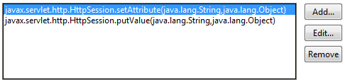

Audit - Rules - ServletsDescriptionThis group contains audit rules that look for the correct implementation of servlets within your code. |
| Rules: |
Summary
The methods doGet(), doPost(), and others should catch ALL Exceptions.
Description
This audit rule violates HttpServlet serving methods that do not catch all exceptions.
Security Implications
Exceptions thrown from a servlet usually end with a stack trace printed to the end user. This stack trace may contain details of your system's architecture that provide valuable information for the attacker.
Example
The following code would be flagged as a violation because it does not catch Exceptions, including runtime ones, that may possibly be thrown from calcDefaultResponse() method:
public class MissingCatchOfExceptionTest extends HttpServlet {
protected void doGet(HttpServletRequest req, HttpServletResponse resp)
throws ServletException, IOException {
try {
resp.getWriter().write(calcDefaultResponse());
} catch (IOException e) {
e.printStackTrace();
}
}
}
Summary
Servlets should not declare any instance fields.
Description
This audit rule checks for the declaration of instance fields in servlets.
Example
The following field would be flagged as a violation if it occurred within a servlet:
private int useCount;
Summary
Don't call various methods from a Servlet.
Description
Avoid calling various methods from a Servlet. Specifically avoid calling any methods from the Thread, ThreadGroup, System, Process, Runtime, DriveManager or Compiler classes. Also avoid calling the Runnable.run() method as well as any methods from the java.awt, javax.swing, java.lang.reflect, javax.sound, java.util.jar or java.util.zip packages.
Summary
Request parameters and other tainted data should not be passed into Session without sanitizing.
Description
Sessions should only store trusted data, so that the developer accessing the data stored in a session would not have to decide whether to sanitize it.
Security Implications
Data stored in a session is usually considered by a developer as a safe one to use. If this data is not checked, it could get into the security-sensitive parts of an application, opening it to all kinds of injection attacks.
Example
The following code uses receives data via HttpServletRequest#getParameter() call and does not clean it before putting it into the session:
login = request.getParameter("login");
session.setAttribute(ATTR_LOGIN, login);

Summary
Sockets should almost never be used in a servlet environment as manual implementations of data transfer protocols compromises security.
Description
According to the J2EE Platform Specification, the only allowed usage of low-level socket interfaces is to establish connections to legacy systems.
Security Implications
Implementing protocols from scratch is error-prone and can easily compromise the security of the application.
Example
The following code uses sockets to establish a connection to the other system and would thus be marked as violation:
public class ProxyRequestServlet extends HttpServlet {
protected void doGet(HttpServletRequest req, HttpServletResponse resp)
throws ServletException, IOException {
Socket s = new Socket("localhost", 8080);
}
}